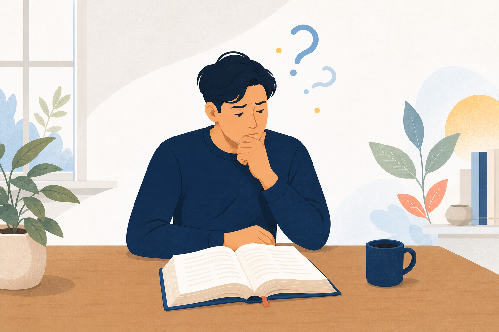
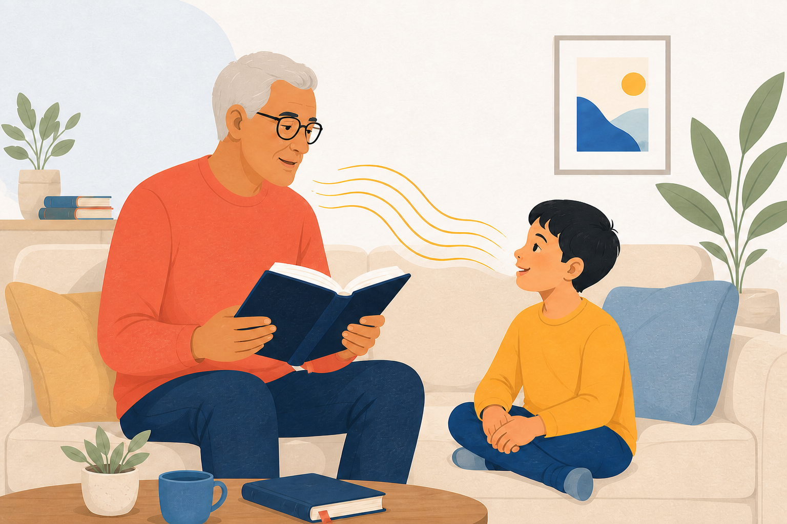
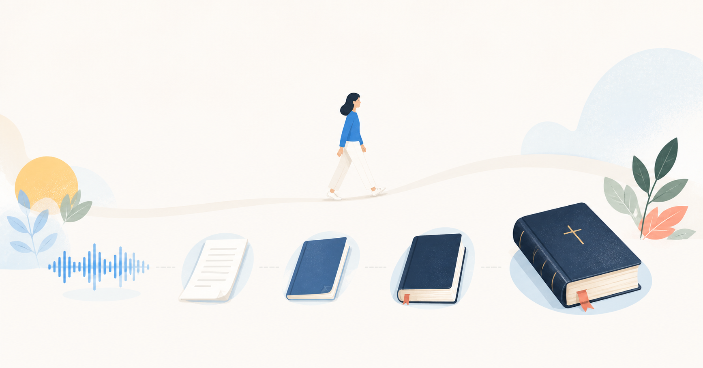

성경을 소리 내어 읽고 녹음하는 이야기
눈으로만 읽거나 귀로만 듣는 것이 아니라, 내 목소리로 소리 내어 읽어 보신 적 있으신가요?
성경은 원래 소리 내어 읽는 말씀이 아니었을까요?

한 절씩 읽고, 한 장씩 모아, 한 권을 완성합니다.
아래의 제목을 눌러 성경낭독녹음 이야기를 만나보세요.
눈으로만 읽거나 귀로만 듣는 것이 아니라, 내 목소리로 소리 내어 읽어 보신 적 있으신가요?
성경은 원래 소리 내어 읽는 말씀이 아니었을까요?

성경을 읽었는데도 읽은 것 같지 않을 때가 있지 않으셨나요?
말씀이 쉽게 지나가는 것처럼 느껴질 때도 있으셨죠?
그 말씀이 내 목소리로 남는다고 생각하면,
또는 누군가에게 직접 읽어 준다고 생각하면 조금 달라지지 않을까요?
AI 음성으로 읽어 주는 성경을 들어 보신 적 있으신가요? 많이 어색하죠.
성우나 유명인이 읽어 주는 성경도 물론 좋겠지만,
우리 아이들과 손주들에게 우리의 목소리로 읽은 성경을 남겨 줄 수 있다면 어떨까요?
오늘 읽은 말씀을 당신의 목소리로 남길 수 있다면 어떨까요?

당신이 읽은 말씀은 당신의 목소리 그대로 한 절씩 녹음되어 저장됩니다.
한 절의 녹음이 모여 한 장의 낭독 파일이 되고, 한 장의 기록이 모여 한 권의 낭독 파일이 됩니다.
Google Drive 백업과 복원을 통해 휴대폰을 바꾸어도 소중한 낭독 기록을 보관할 수 있습니다.
교회와 공동체에서는 함께 성경을 읽고, 성경읽기 대회를 진행할 수도 있습니다.
성경을 소리 내어 읽고 녹음하는 이야기
내 목소리로 남기는 성경 이야기
오늘 읽은 한 절이 내 목소리로 남는 기록이 됩니다.
한 절씩 읽고, 한 장씩 모아, 한 권을 완성합니다.
그리고 그 한 권이 성경통독으로 이어집니다.
성경낭독녹음과 함께 오늘부터 한 절씩 시작해 보세요.

오늘 읽고 녹음한 한 절이
당신을 위한 말씀으로 남을 것입니다.